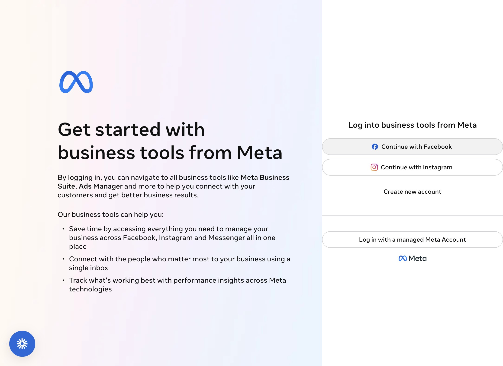
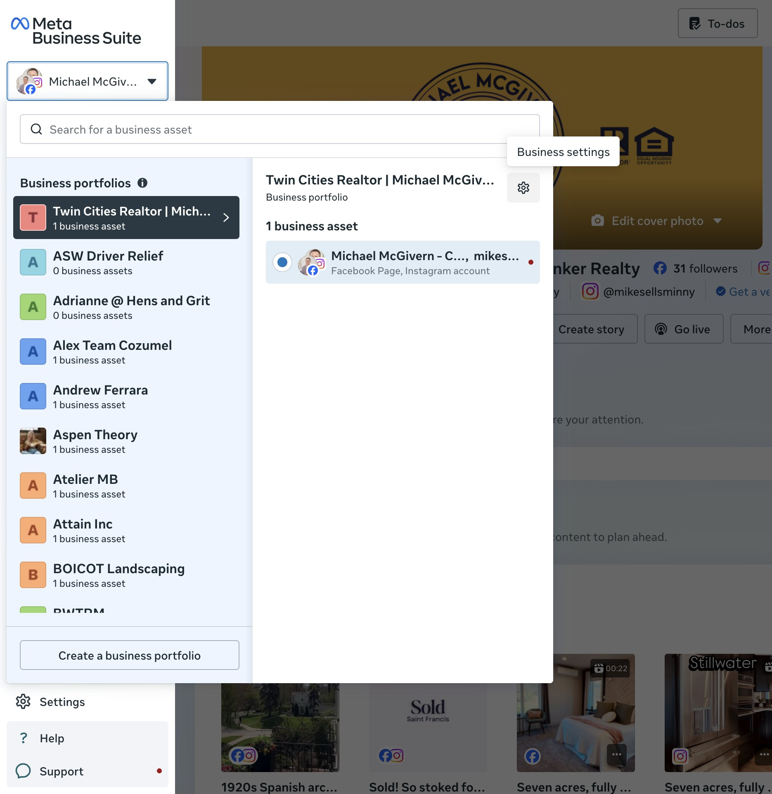
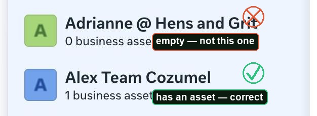
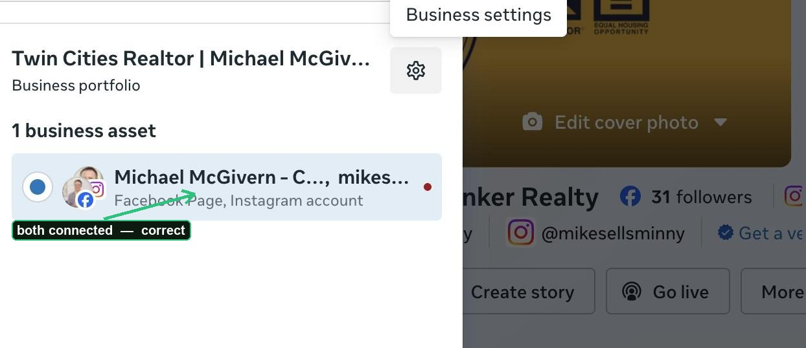
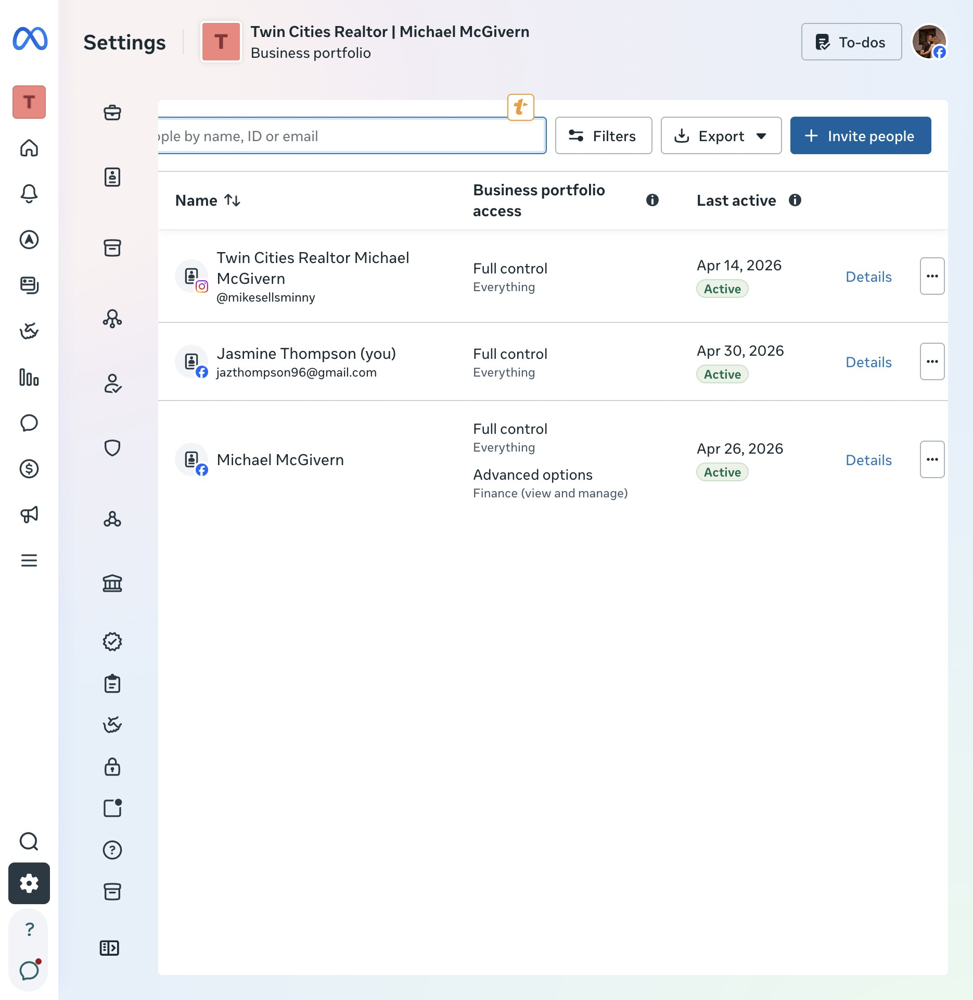
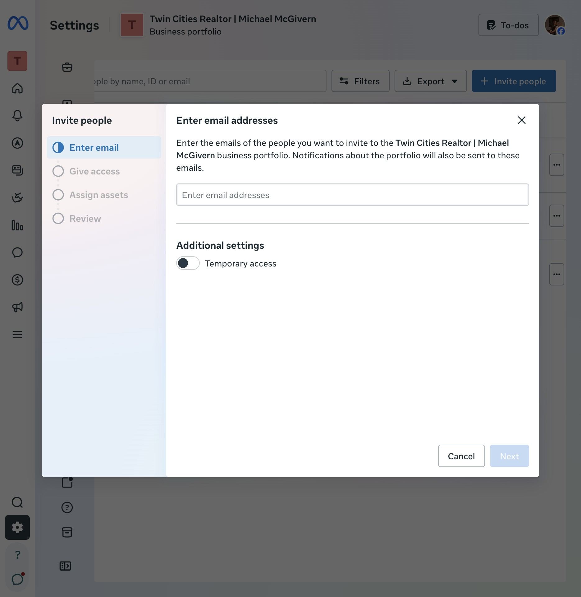
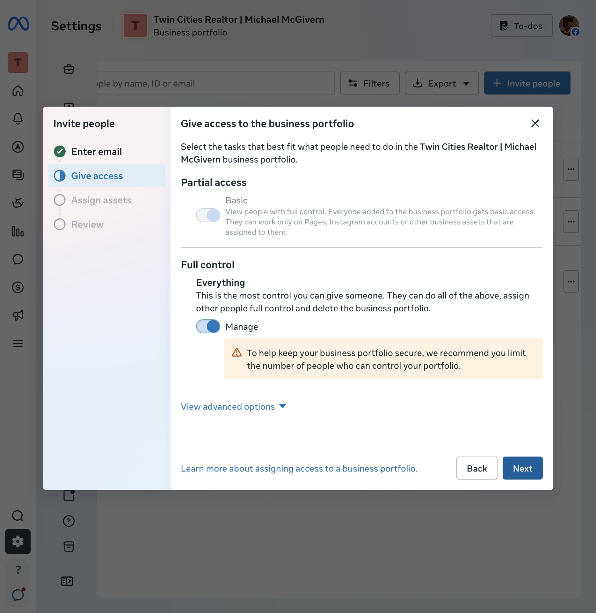
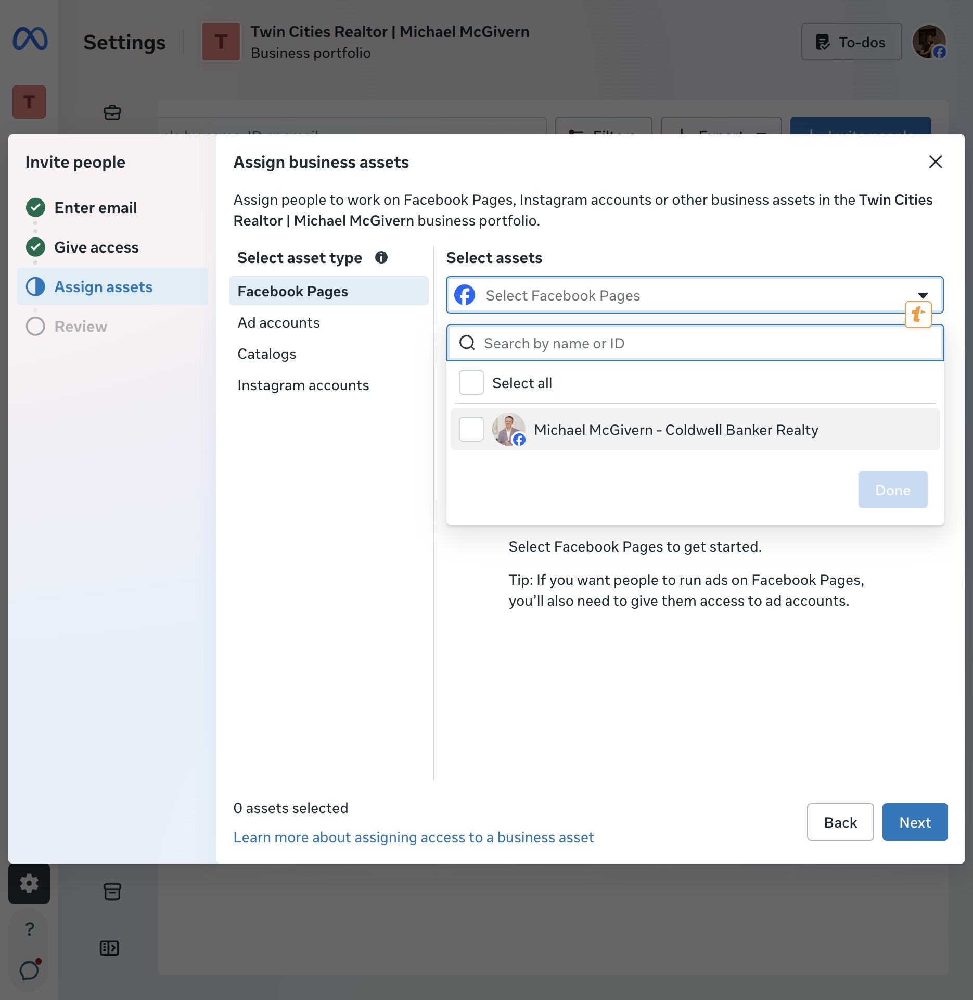
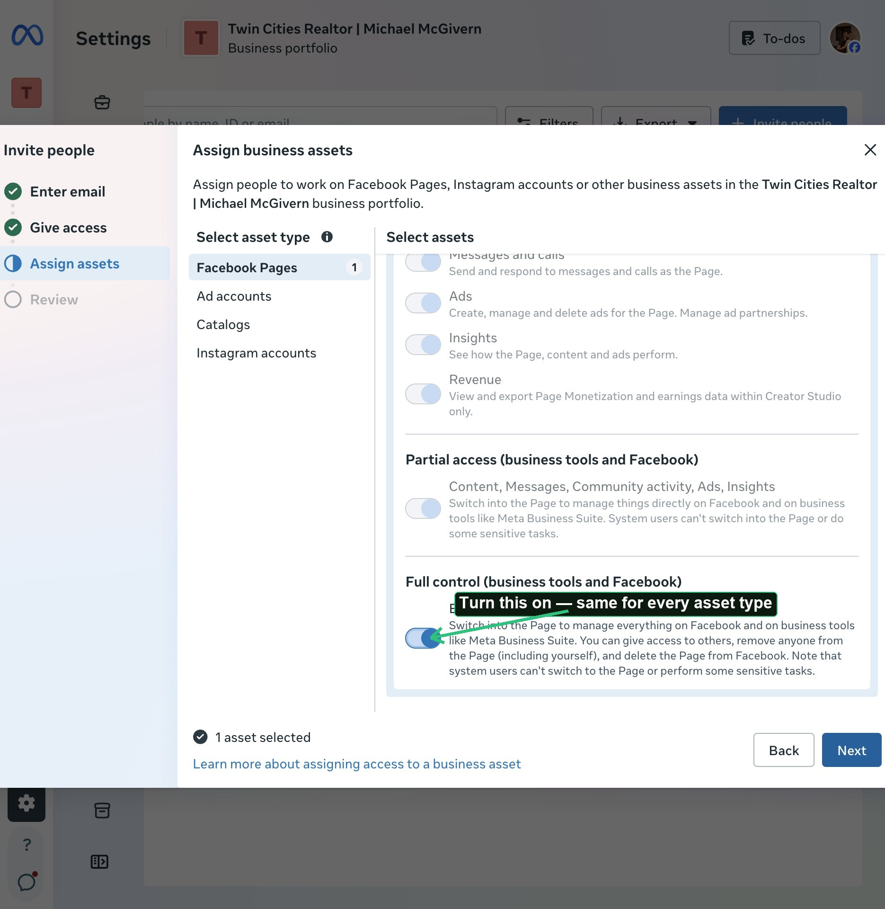
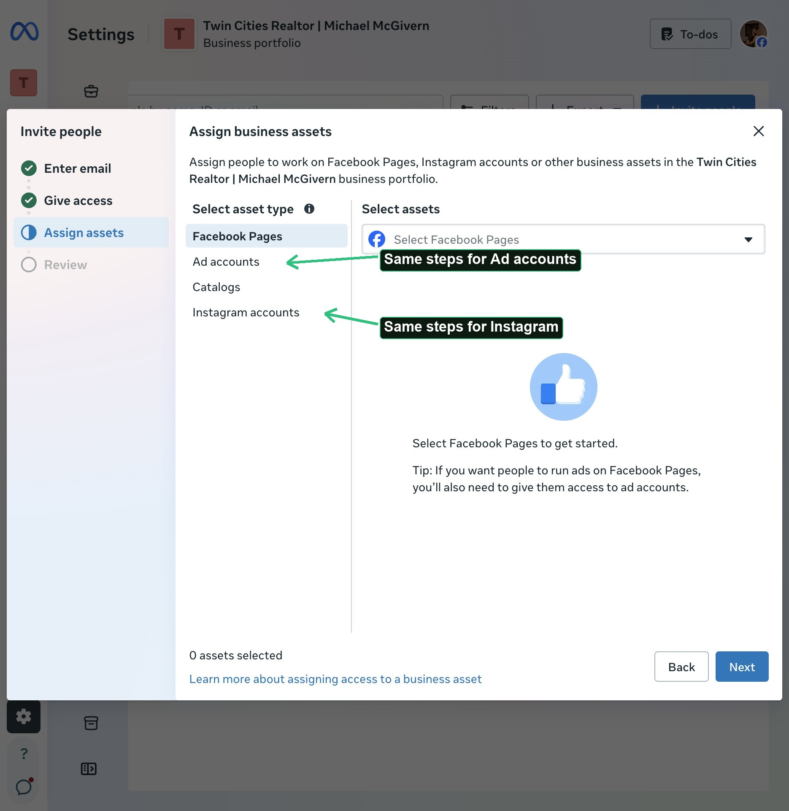

Step 1 — Log in with Facebook
Go to business.facebook.com and log in with your own personal Facebook account — the email you use to log into Facebook is the one you use here. Facebook is always the primary login.
Only use "Continue with Instagram" as a last resort — and only if it's your business Instagram account, never a personal one. This path is for the rare case where your personal Facebook is locked or hacked, and your business Instagram is the only way back in.

✓ Checkpoint: the page says "Log into business tools from Meta."
Step 2 — Open your Business Portfolio's settings
Click your name or profile picture in the top-left corner. A panel opens listing your Business Portfolios.
Click the correct one, then click the small gear icon next to its name — a tooltip will say "Business settings." Click it.

Most people have more than one portfolio listed — here's how to tell which is real
Meta lets anyone create a Business Portfolio in seconds, so most accounts that have been around a while show several — most with nothing actually in them. You only want the one that owns your real Page.


Step 3 — Go to People
In the left menu of Settings, click the People icon (a small person silhouette).

✓ Checkpoint: a list of names, with a blue "+ Invite people" button top right.
Step 4 — Invite me
Click + Invite people, then type my email exactly: jazthompson96@gmail.com. Leave "Temporary access" off. Click Next.

Step 5 — Give access
Under Full control, find "Everything" and turn its toggle on. A security warning will appear — that's normal, not an error.

✓ Checkpoint: the warning reads "To help keep your business portfolio secure, we recommend you limit the number of people who can control your portfolio." That means it worked — click Next.
Step 6 — Assign each asset
You'll land on "Assign business assets" with asset types listed on the left: Facebook Pages, Ad accounts, Catalogs, Instagram accounts. Do this once for each asset your project needs.
Facebook Page: with "Facebook Pages" selected, click the dropdown and check your Page.

Then scroll down to "Full control (business tools and Facebook)" and turn on "Everything."

Instagram and ad account: the same asset-type list has both — click the one you need, select the asset, then turn on "Full control → Everything" the exact same way as the Page.

Pixel: works the same way, and shows up as its own option in this same asset-type list — but only once a Pixel has actually been created for the account. If you don't see it listed, one likely hasn't been created yet.
Step 7 — Review and send
Click Next, review what you're about to grant, then send the invite.